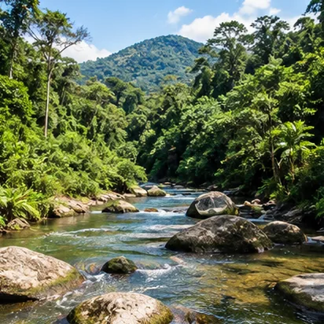
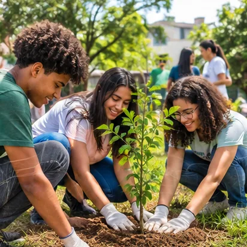
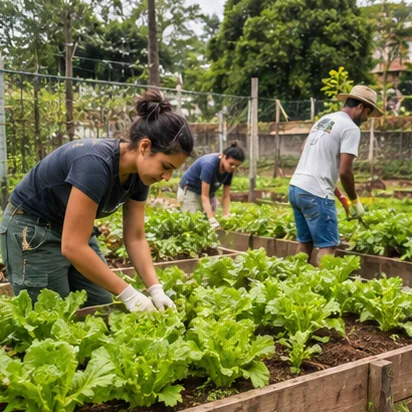
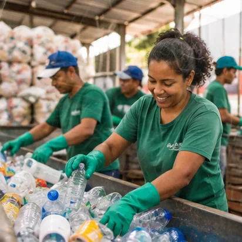

01 / AMBIENTAL
Proteger os ecossistemas
Conservar água, solo, ar, florestas e biodiversidade. Isso também significa reduzir a poluição e evitar o desperdício de recursos naturais.
O EcoConsciente é um espaço para entender o impacto das escolhas do dia a dia — da compra de um lanche ao descarte de uma embalagem — e descobrir alternativas possíveis.

Este projeto educativo apresenta sustentabilidade de um jeito direto, com exemplos próximos da rotina de estudantes. A proposta não é cobrar perfeição: é ajudar a perceber problemas, conhecer soluções e entender que mudanças também dependem de empresas, governos e comunidades.
Sustentabilidade é buscar equilíbrio entre meio ambiente, bem-estar social e atividade econômica, sem comprometer as condições de vida das próximas gerações.

Conservar água, solo, ar, florestas e biodiversidade. Isso também significa reduzir a poluição e evitar o desperdício de recursos naturais.

Promover saúde, educação, respeito, inclusão e condições dignas. Os impactos ambientais também afetam a vida das comunidades.

Valorizar produtos duráveis, trabalho justo e processos que usem melhor os materiais e evitem perdas desnecessárias.

O lixo continua existindo depois que o caminhão passa. A forma como os materiais são separados, coletados e tratados influencia a poluição, a saúde pública e o trabalho de catadores e cooperativas.
Aprender a separar materiais →Não é um assunto distante. Ele aparece na escola, nas compras, na alimentação, no transporte e no uso de água e energia.
Uma escola pode mapear o desperdício de papel e comida, instalar pontos de separação, cuidar de áreas verdes e discutir soluções com estudantes, funcionários e comunidade.
Moda rápida, eletrônicos, publicidade e tendências nas redes influenciam compras. Antes de adquirir algo, vale perguntar: preciso, vou usar bastante, posso consertar ou pegar emprestado?
Banhos mais curtos, torneiras fechadas, lâmpadas apagadas em ambientes vazios e uso consciente de aparelhos ajudam a evitar desperdício. Vazamentos devem ser comunicados e corrigidos.
Desmatamento, queimadas, poluição de rios, descarte inadequado de resíduos e desigualdade no acesso ao saneamento são desafios que variam entre regiões e municípios.
Resíduos nas ruas podem chegar a bueiros, córregos e oceanos. Preservar áreas verdes, respeitar a fauna e descartar corretamente são atitudes importantes, junto de políticas públicas.
Repensar, recusar, reduzir, reutilizar e reciclar. A ordem ajuda a lembrar que evitar gerar resíduos costuma ser melhor do que depender apenas da reciclagem.
A ODS 12 busca assegurar padrões sustentáveis de consumo e produção. Entre suas metas estão o uso eficiente dos recursos naturais, a redução do desperdício de alimentos, o manejo adequado de resíduos e a informação para escolhas mais responsáveis.
Ver metas oficiais da ODS 12 ↗Escolha um tipo de resíduo para ver cuidados básicos. A aceitação pode mudar conforme a coleta seletiva da sua cidade.
Embalagens, garrafas e frascos podem ser recicláveis quando o sistema local os recebe.
Esvazie a embalagem, retire o excesso de restos de alimentos e, se possível, dê uma enxaguada rápida. Deixe secar.
Não misture com resíduos orgânicos. Tampas, rótulos e plásticos flexíveis podem ter regras diferentes na coleta local.
Atenção: pilhas, baterias, lâmpadas, eletrônicos, medicamentos e óleo de cozinha precisam de pontos de entrega específicos. Não os coloque automaticamente no reciclável comum.
Abra os cartões para conferir explicações rápidas e evitar informações enganosas.
Mito. Existem diferentes tipos de plástico e nem todos são aceitos por todos os sistemas. A separação, a limpeza e a infraestrutura disponível fazem diferença.
Verdade. Evitar uma embalagem desnecessária ou reutilizar um objeto pode impedir a geração de um resíduo. A reciclagem continua importante para materiais que já foram utilizados.
Mito. A coleta e a destinação variam por município. O ideal é conhecer o serviço local e encaminhar materiais a cooperativas ou pontos de entrega confiáveis.
Mito. Muitas escolhas não exigem gastar mais: planejar compras, consertar, compartilhar, evitar desperdício e usar o que já se tem também contam.
Verdade. Alimentos descartados representam perda de água, energia, trabalho, transporte e outros recursos usados na produção e distribuição.
Indicadores oficiais mostram avanços e desigualdades. Observe sempre o ano, o recorte e o que cada indicador realmente mede.
dos domicílios brasileiros tinham coleta de lixo em 2024, direta ou por caçamba.
IBGE · PNAD Contínua 2024dos domicílios tinham coleta direta de lixo em 2024. Nas áreas rurais, o percentual era 33,1%.
IBGE · PNAD Contínua 2024de domicílios ainda queimavam resíduos na própria moradia em 2024, segundo o IBGE.
IBGE · PNAD Contínua 2024Coleta de lixo não é sinônimo de coleta seletiva nem garante que o material será reciclado. Os dados acima descrevem o destino informado pelos domicílios, conforme a pesquisa do IBGE.
Escolha um hábito por dia. Marque quando concluir e acompanhe seu avanço. O progresso fica salvo neste navegador.
Informe hábitos que você conseguiria mudar. A calculadora estima a quantidade de resíduos que poderia deixar de gerar em um ano.
Ajuste os controles para simular uma mudança realista na sua rotina.
Como calculamos: consideramos 52 semanas por ano e uma massa aproximada de 20 g por garrafa PET vazia de 500 ml. Os quilos de alimentos são calculados diretamente a partir do valor informado. São estimativas didáticas, não uma medição individual nem uma avaliação completa da pegada ambiental. O peso real das embalagens varia.
Responda às perguntas, veja a explicação de cada resposta e confira seu resultado no final.
Os dados e as metas citados nesta página podem ser conferidos nos materiais institucionais abaixo.
Nota metodológica: os percentuais apresentados referem-se à PNAD Contínua do IBGE, ano de referência 2024, e descrevem o destino do lixo nos domicílios. Não devem ser interpretados como taxa de reciclagem.